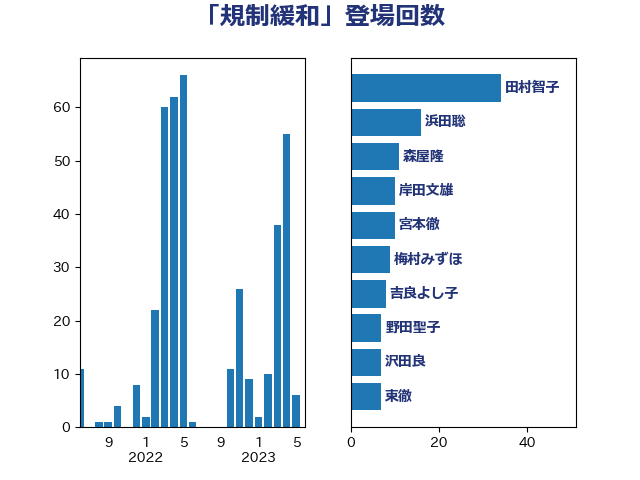

単語「規制緩和」

| 田村智子 | 日本共産党 | 34 回 |
| 浜田聡 | NHK党 | 16 回 |
| 森屋隆 | 立憲民主党 | 11 回 |
| 岸田文雄 | 自由民主党 | 10 回 |
| 宮本徹 | 日本共産党 | 10 回 |
| 梅村みずほ | 日本維新の会 | 9 回 |
| 吉良よし子 | 日本共産党 | 8 回 |
| 野田聖子 | 自由民主党 | 7 回 |
| 沢田良 | 日本維新の会 | 7 回 |
| 東徹 | 日本維新の会 | 7 回 |
| 岩渕友 | 日本共産党 | 6 回 |
| 伊藤岳 | 日本共産党 | 6 回 |
| 石垣のりこ | 立憲民主党 | 5 回 |
| 清水貴之 | 日本維新の会 | 5 回 |
| 浅川義治 | 日本維新の会 | 5 回 |
| 横山信一 | 公明党 | 5 回 |
| 斉藤鉄夫 | 公明党 | 5 回 |
| 小野泰輔 | 日本維新の会 | 5 回 |
| 塩川鉄也 | 日本共産党 | 5 回 |
| 鬼木誠 | 立憲民主党 | 4 回 |
| 紙智子 | 日本共産党 | 4 回 |
| 浜口誠 | 国民民主党 | 4 回 |
| 末松信介 | 自由民主党 | 4 回 |
| 星北斗 | 自由民主党 | 4 回 |
| 守島正 | 日本維新の会 | 4 回 |
| 大石あきこ | れいわ新選組 | 4 回 |
| 三木圭恵 | 日本維新の会 | 4 回 |
| 高橋千鶴子 | 日本共産党 | 3 回 |
| 阿部司 | 日本維新の会 | 3 回 |
| 野中厚 | 自由民主党 | 3 回 |
| 芳賀道也 | 国民民主党 | 3 回 |
| 福田昭夫 | 立憲民主党 | 3 回 |
| 石井苗子 | 日本維新の会 | 3 回 |
| 藤巻健太 | 日本維新の会 | 2 回 |
| 舞立昇治 | 自由民主党 | 2 回 |
| 石橋通宏 | 立憲民主党 | 2 回 |
| 漆間譲司 | 日本維新の会 | 2 回 |
| 浦野靖人 | 日本維新の会 | 2 回 |
| 浅田均 | 日本維新の会 | 2 回 |
| 本田顕子 | 自由民主党 | 2 回 |
| 末次精一 | 立憲民主党 | 2 回 |
| 志位和夫 | 日本共産党 | 2 回 |
| 徳永エリ | 立憲民主党 | 2 回 |
| 山添拓 | 日本共産党 | 2 回 |
| 山本剛正 | 日本維新の会 | 2 回 |
| 山本佐知子 | 自由民主党 | 2 回 |
| 山岸一生 | 立憲民主党 | 2 回 |
| 山下芳生 | 日本共産党 | 2 回 |
| 小熊慎司 | 立憲民主党 | 2 回 |
| 小林鷹之 | 自由民主党 | 2 回 |
| 大岡敏孝 | 自由民主党 | 2 回 |
| 坂本哲志 | 自由民主党 | 2 回 |
| 古川直季 | 自由民主党 | 2 回 |
| 伊佐進一 | 公明党 | 2 回 |
| 井上哲士 | 日本共産党 | 2 回 |
| 三浦信祐 | 公明党 | 2 回 |
| 高野光二郎 | 自由民主党 | 1 回 |
| 高橋光男 | 公明党 | 1 回 |
| 高木かおり | 日本維新の会 | 1 回 |
| 須藤元気 | 無所属 | 1 回 |
| 青柳仁士 | 日本維新の会 | 1 回 |
| 青山大人 | 立憲民主党 | 1 回 |
| 長谷川英晴 | 自由民主党 | 1 回 |
| 鈴木英敬 | 自由民主党 | 1 回 |
| 金子恵美 | 立憲民主党 | 1 回 |
| 遠藤良太 | 日本維新の会 | 1 回 |
| 進藤金日子 | 自由民主党 | 1 回 |
| 辻元清美 | 立憲民主党 | 1 回 |
| 足立康史 | 日本維新の会 | 1 回 |
| 赤羽一嘉 | 公明党 | 1 回 |
| 赤嶺政賢 | 日本共産党 | 1 回 |
| 西田昌司 | 自由民主党 | 1 回 |
| 藤田文武 | 日本維新の会 | 1 回 |
| 藤木眞也 | 自由民主党 | 1 回 |
| 藤井比早之 | 自由民主党 | 1 回 |
| 菅義偉 | 自由民主党 | 1 回 |
| 自見はなこ | 自由民主党 | 1 回 |
| 美延映夫 | 日本維新の会 | 1 回 |
| 篠原孝 | 立憲民主党 | 1 回 |
| 笠井亮 | 日本共産党 | 1 回 |
| 神谷裕 | 立憲民主党 | 1 回 |
| 石川博崇 | 公明党 | 1 回 |
| 石井啓一 | 公明党 | 1 回 |
| 田村憲久 | 自由民主党 | 1 回 |
| 田村まみ | 国民民主党 | 1 回 |
| 田名部匡代 | 立憲民主党 | 1 回 |
| 牧島かれん | 自由民主党 | 1 回 |
| 湯原俊二 | 立憲民主党 | 1 回 |
| 渡辺博道 | 自由民主党 | 1 回 |
| 渡辺創 | 立憲民主党 | 1 回 |
| 泉健太 | 立憲民主党 | 1 回 |
| 池畑浩太朗 | 日本維新の会 | 1 回 |
| 永岡桂子 | 自由民主党 | 1 回 |
| 橘慶一郎 | 自由民主党 | 1 回 |
| 松沢成文 | 日本維新の会 | 1 回 |
| 杉田水脈 | 自由民主党 | 1 回 |
| 杉尾秀哉 | 立憲民主党 | 1 回 |
| 本村伸子 | 日本共産党 | 1 回 |
| 徳永久志 | 立憲民主党 | 1 回 |
| 後藤茂之 | 自由民主党 | 1 回 |
| 後藤祐一 | 立憲民主党 | 1 回 |
| 平木大作 | 公明党 | 1 回 |
| 平口洋 | 自由民主党 | 1 回 |
| 川合孝典 | 国民民主党 | 1 回 |
| 岸真紀子 | 立憲民主党 | 1 回 |
| 岡田直樹 | 自由民主党 | 1 回 |
| 岡本三成 | 公明党 | 1 回 |
| 岡本あき子 | 立憲民主党 | 1 回 |
| 山下貴司 | 自由民主党 | 1 回 |
| 小林一大 | 自由民主党 | 1 回 |
| 小宮山泰子 | 立憲民主党 | 1 回 |
| 寺田静 | 無所属 | 1 回 |
| 宮本岳志 | 日本共産党 | 1 回 |
| 奥下剛光 | 日本維新の会 | 1 回 |
| 大椿ゆうこ | 立憲民主党 | 1 回 |
| 大串正樹 | 自由民主党 | 1 回 |
| 塩村あやか | 立憲民主党 | 1 回 |
| 堂込麻紀子 | 無所属 | 1 回 |
| 吉川赳 | 無所属 | 1 回 |
| 古賀友一郎 | 自由民主党 | 1 回 |
| 古川元久 | 国民民主党 | 1 回 |
| 古川俊治 | 自由民主党 | 1 回 |
| 原口一博 | 立憲民主党 | 1 回 |
| 務台俊介 | 自由民主党 | 1 回 |
| 倉林明子 | 日本共産党 | 1 回 |
| 佐々木紀 | 自由民主党 | 1 回 |
| 住吉寛紀 | 日本維新の会 | 1 回 |
| 伊東信久 | 日本維新の会 | 1 回 |
| 五十嵐清 | 自由民主党 | 1 回 |
| 串田誠一 | 日本維新の会 | 1 回 |
| 中野洋昌 | 公明党 | 1 回 |
| 上田英俊 | 自由民主党 | 1 回 |
| ながえ孝子 | 無所属 | 1 回 |
| こやり隆史 | 自由民主党 | 1 回 |